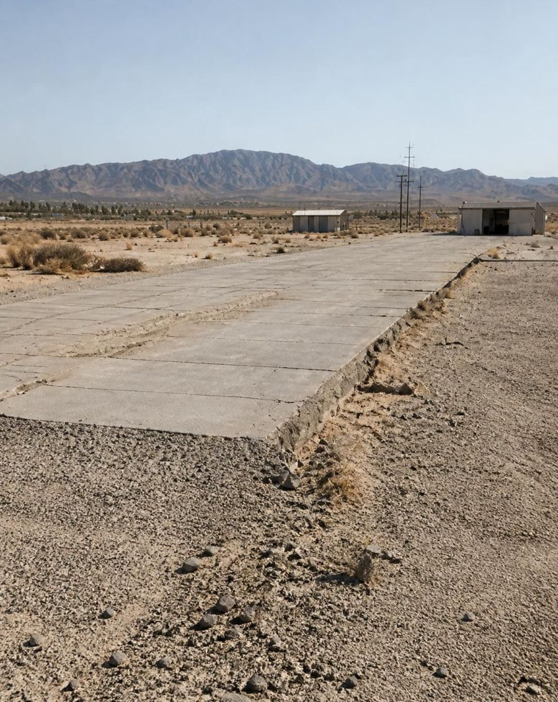
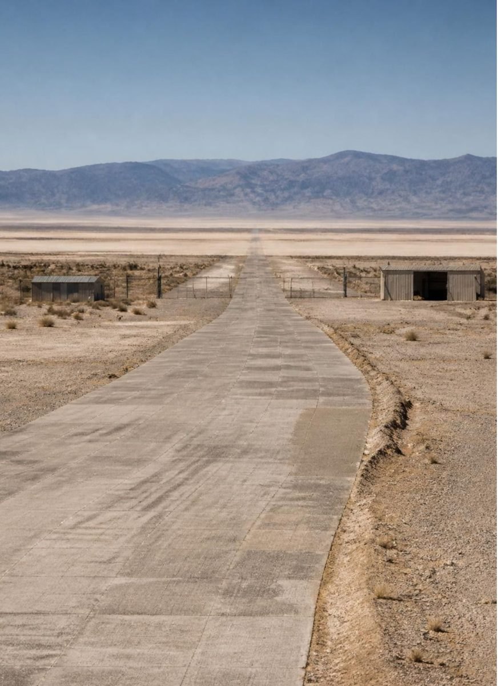
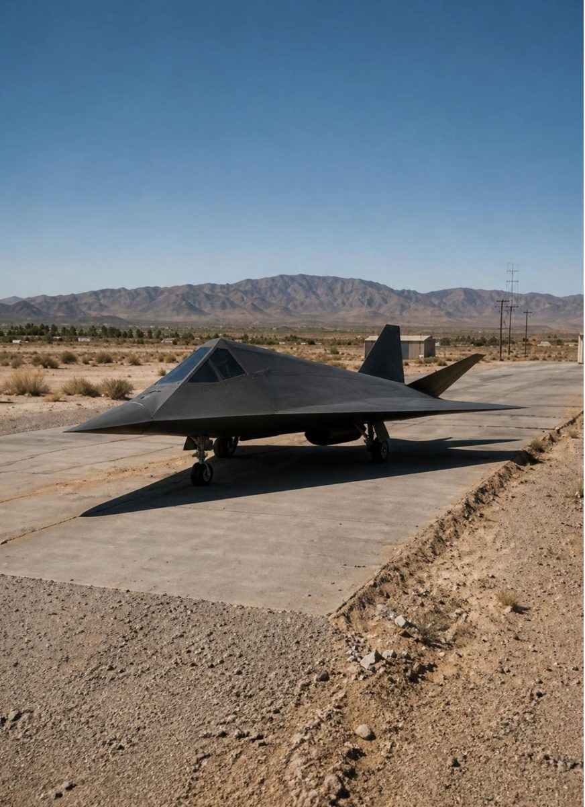
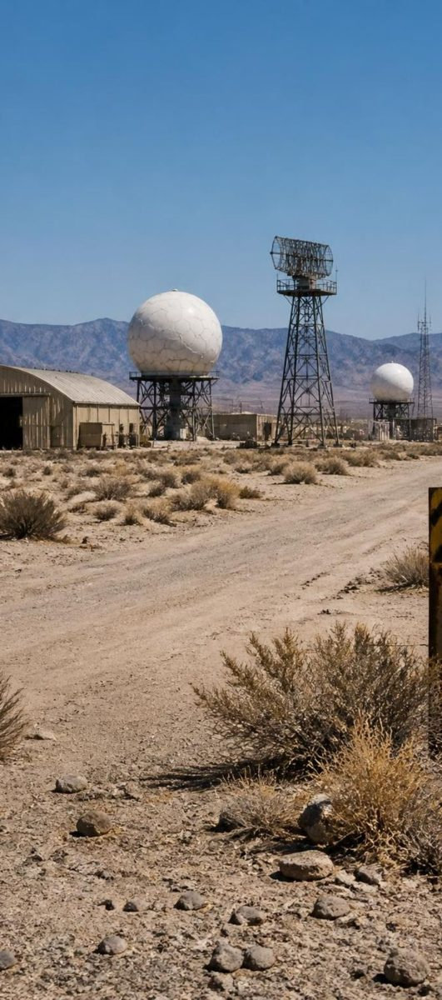

El Área 51 como distracción
Una hipótesis sobre la atención pública, la desinformación y las instalaciones militares que quedan fuera de foco.
¿Área 51?
¿Cuántas veces has oído hablar de ella? Seguro que muchas: películas, memes, documentales.
¿Tonopah, Dugway, Pine Gap?
¿Cuántas veces has oído hablar de ellas? Probablemente casi ninguna.
Esa diferencia es el centro de la hipótesis: el Área 51 funciona, en gran medida, como una distracción.

Qué es el Área 51
Es una base militar en el desierto de Nevada, junto al lago seco de Groom Lake. Se estableció en 1955 para probar en secreto el avión espía U-2.
- Está rodeada de terreno restringido.
- Tiene vigilancia armada.
- Hasta el espacio aéreo sobre ella está prohibido.
- Con los años, su nombre se volvió sinónimo de extraterrestres.
1947
Caso Roswell.
1955
Nace la base para probar el avión espía U-2.
1989
Bob Lazar asegura haber trabajado con naves alienígenas en una instalación cercana.
2013
La CIA reconoce oficialmente la base.
Hoy es probablemente el lugar secreto más famoso del planeta. ¿Por qué justamente el más famoso?

El secreto es real
Durante décadas el gobierno de Estados Unidos negó la existencia de esta base. Recién en 2013, la CIA publicó documentos desclasificados que la reconocían oficialmente.
Vuelos experimentales
Allí se probaron aviones reales y revolucionarios: el U-2, el A-12 y el F-117. Eran tecnologías que parecían ciencia ficción en su época.
Avistamientos correlacionados
Los objetos extraños que reportaban pilotos y testigos coincidían con los vuelos de prototipos.
Silencio operativo
Había tecnología secreta de verdad, y un gobierno que prefería no explicar nada.

La desinformación existe
Los servicios de inteligencia han usado la desinformación. Esto no es una especulación: hay casos con nombres y apellidos.
1. Infiltración
En los años 80, agentes de la Fuerza Aérea alimentaron con información falsa sobre ovnis al empresario Paul Bennewitz, para desacreditarlo.
Uno de esos agentes, Richard Doty, ha reconocido su participación.
2. Versionado
En Roswell el gobierno dio explicaciones cambiantes durante décadas: primero un globo meteorológico, luego el proyecto secreto Mogul, luego muñecos de pruebas.
Cada versión, en lugar de apagar el mito, lo alimentó.
3. Censura por estigma
Si alguien dice haber visto algo extraño en Nevada, de inmediato lo etiquetamos como fanático de los ovnis.
Un testimonio sobre tecnología militar real queda desacreditado sin que nadie tenga que censurarlo.
El mito hace el trabajo de la censura.
La lógica del señuelo
Pensemos con frialdad, como un estratega: dejar que circule el mito alienígena es barato. No hay que ocultar nada activamente, basta con no desmentirlo.
Atención pública
La curiosidad pública, los periodistas y los aficionados se concentran en un solo punto del desierto.
Punto focal: Área 51
El nombre concentra una atención colectiva enorme, en medios, internet y cultura popular.
Programas protegidos
Toda esa atención es atención que no se dirige a otras instalaciones, otros programas, otras preguntas.
Barato
Dejar circular el mito no exige ocultar nada: basta con no desmentirlo.
+2 millones
En 2019, más de dos millones de personas confirmaron en internet su asistencia a un evento para "invadir" el Área 51.
Unos cientos
Aparecieron unos cientos, pero lo revelador es la escala de atención que concentra el nombre.
Otros lugares fuera de foco
¿Y qué hay en esos otros lugares? Instalaciones reales donde se desarrollan tecnologías y decisiones reales.
Tonopah Test Range
Nevada. Base donde se operó en secreto el caza furtivo F-117 durante años.
Skunk Works
California. Famosa por desarrollar aviones como el SR-71.
Dugway Proving Ground
Utah. Un campo de pruebas militar enorme, con acceso muy controlado.
Pine Gap
Australia. Instalación conjunta de inteligencia de la que se sabe muy poco.
Ninguno de estos nombres genera películas, memes ni documentales.
Si el secreto de Estado importa, ¿por qué conversamos tanto de un sitio y tan poco de los demás? La hipótesis del señuelo es una respuesta posible a esa asimetría.

Mirar más allá de Nevada
Repasemos el camino que recorrimos:
El secreto es real
Fue negado durante décadas, hasta la desclasificación de 2013.
La desinformación está documentada
Es una herramienta de la inteligencia, con casos como Bennewitz.
El mito concentra atención
Más de dos millones de personas confirmaron asistencia al evento de 2019.
Otros sitios quedan en la sombra
Tonopah, Dugway, Skunk Works y Pine Gap son igual de sensibles.
Lo que propongo es algo más modesto y más sólido que una certeza: no hace falta demostrar que no hay nada en el Área 51. Basta con reconocer que el mayor éxito de un secreto es que la gente discuta sobre el lugar equivocado.
La pregunta ya no es si existe un señuelo, sino cuántas instalaciones quedan fuera de la conversación porque todos estamos mirando Nevada.